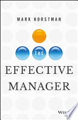

I started listening to the Manager Tools podcast (Mark Horstman and Mike Auzenne) over ten years ago and am a big fan of their no-nonsense, practical approach to management. I paid for myself to attend one of their Effective Manager conferences (although I think it was called something different back them) when I worked in Chicago. So when I heard that Mark Horstman was going to release a book, I made sure to order a copy. In fact I got both a signed hardcover as well as the eBook for reference on the go. I even gave a copy to every person on my former management team when I moved roles. I don’t necessarily agree with all their advice - and they are very opinionated - but I appreciate that their advice is detailed and actionable. They’ve really thought through this stuff.
Though the book is relatively slim - the podcast material collected over 10 years is voluminous and wouldn’t fit in a single volume - this book covers the core Manager Tools guidance. For me the heart of the book is actually in the Afterword, and is probably the core reason why I like these guys so much:
…in all the details and recomendations, I hope I haven’t obscured what the engine of your greatness as a manager can be: Love. If you want to be a great manager, do these things with love. What I mean here is professional love: the willingness to risk yourself for the benefit of another. It means doing somethinh that may be a little more difficult for you, as a way of showing respect for your colleagues and your organization. You can be demanding while also showing respect for your team. You don’t have to withhold positive feedback. You can give negative feedback with love in your heart. You can deliver tough messages with kindness. You don’t have to be mean, short, or disrespectful to challenge people. You don’t have to be brusque or rude. You don’t have to “act like the boss”. Nor do you have to sugarcoat hard messages. Be direct, and be kind doing it. That takes love.
Highly recommended for any manager or wanna-be manager.
MODEL
An Effective Manager is one who gets results and retains her people.
Four Critical Behaviors
- Get to Know Your People -> One-on-Ones
- Communicate about Performance -> Feedback
- Ask for More (from your directs) -> Coaching
- Push Work Down -> Delegation
One On Ones
Scheduled, weekly, 30-minute meetings with each of your directs.
- 10/10/10
- 10 minutes for your direct’s agenda (they always go first)
- 10 minutes for your agenda
- 10 minutes to talk about the future, career etc (not necessarily every week)
- Can often be 15/15 or 20/20
Feedback - 4 steps
- Ask -> e.g. “Can I give you some feedback?”
- State the behavior -> e.g. “When you (insert behavior)”
- State the impact of the behavior -> e.g. “Here’s what happens…(insert effects of behavior)”
- Encourage effective future behavior -> e.g. “Please keep it up” / “What can you do differently?”
Behavior
- The words you say
- How you say those words
- Your facial expressions
- Body language
- Work Product
- Quality
- Quantity
- Accuracy
- Timeliness
- Documents
- Not attitudes or motivations
Coaching Model
- Collaborate to set a goal -> DBQ = Deadline, Behavior, Quality
- Collaborate to brainstorm resources
- Collaborate to create a plan -> just first few weeks initially
- The Direct acts and reports on the plan
Delegation Model
- State your desire for help (not a favor)
- Tell thme why you’re asking them
- Ask for specific acceptance
- Describe the task or project in detail
- Address deadline, quality and reporting standards